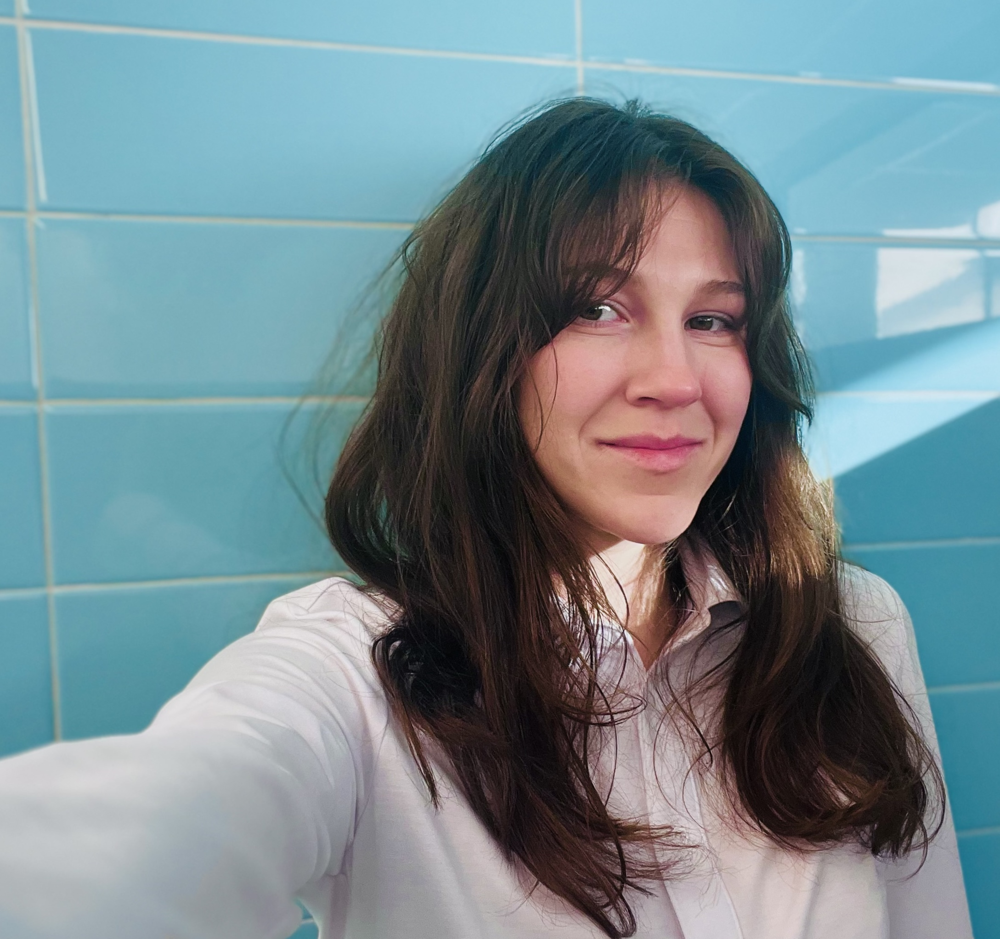
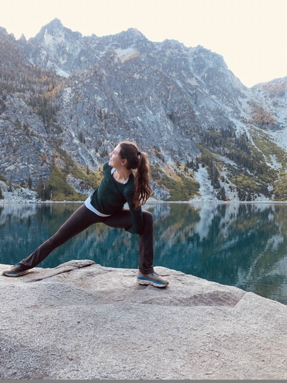

g r a c e d o u g l a s
Currently I'm a Transportation Systems Ph.D. Candidate at the C2SMART Institute in the Civil & Urban Engineering Department at the New York University Tandon School of Engineering in Downtown Brooklyn, NY. My advisor is Dr. Linda Ng Boyle at C2SMART's HumanFUEL (Human Factors and Urban Ergonomics Lab), where we develop user-centered road safety solutions using statistical modeling and human-subjects experimentation.
Eyes Up! — paid walking study in NYC
Wear eye-tracking glasses on two short walks (~0.5 mi each) through a neighborhood you already know, and think aloud as you go. Two sessions across three days, $30 compensation. Adults 18–65 who regularly walk their area.
Participant interest form →


☕️ Water cooler coffee?1,2
I'm best over a cup of joe :) Please reach out with any questions or to discuss my work! You can email me at grace.douglas@nyu.edu or connect with me on LinkedIn.
1Koch, T., & Denner, N. (2022). Informal communication in organizations: work time wasted at the water-cooler or crucial exchange among co-workers?. Corporate Communications: An International Journal, 27(3), 494-508.
2Woo, D., Endacott, C. G., & Myers, K. K. (2023). Navigating water cooler talks without the water cooler: Uncertainty and information seeking during remote socialization. Management Communication Quarterly, 37(2), 251-280.